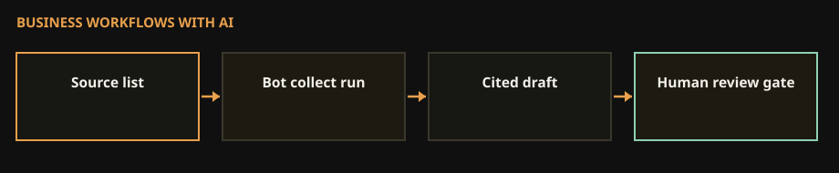
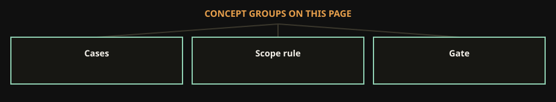

Business workflows with AI
Business cases in sources automate parts of a firm, not a whole firm. Each case table names the real scope, the human work left, and the claim status.

Case B1. Sanchez lead system
| Part | Fact from source |
|---|---|
| Models and face | Grok Bot bots on one shared cloud computer |
| Data and tools | Google and LinkedIn search, HubSpot CRM, a sheet |
| State | CRM dedupe check, sheet rows, saved mail drafts |
| Schedule | Daily finder runs per her reel |
| Human review | All sends wait for approval. Drafts only |
| Monitor and recovery | Not in source |
| Cost | Not in source |
| Manual work left | Draft approval, calls, close work, offer and service work |
| Claim status | Outcomes self reported, Low. Pattern value stands apart from numbers |
Case B2. Isenberg company brain and agent agency
System: a brain folder with six files, an evidence folder for agent guesses, a human promotion rule, a 50 sample eval set per agent, and draft and approve mode at start. Business form in one podcast summary: a build and manage fee per client per month. Economics in that summary form a sales claim, not a test result. Staff and contractor counts: not in source.
Case B3. Muse for Small Business
System per one launch report: mail sort and draft replies, ad campaign builds, finance reads, owner approval on sends and spend. Scope: three task areas in one firm back office. No source shows staff cuts, profit or full firm automation.
Case B4. Duet and dots as back office agents
Launch reports show briefs, app checks, draft acts and approval gates for mail, calendar, pay and sign acts. No independent operator case sits in sources by cutoff. Treat both as vendor described capacity, not as a proven business result.
Entire business claims, scope rule
A claim of a full business on AI must name staff, contractors, infra, human hours and the manual steps left. A post with none of that data supports a workflow claim only, at the scope the post shows.
Tutorial: build a cited weekly report workflow
- Pick one report: market scan, lead list or ops digest.
- Write the source list and the claim rule: each claim needs a link and a date.
- Run Lab 3 code on a ledger. Check the confidence split.
- Draft the report from rows with High or Medium-High marks first.
- Flag each Low row for a human check.
- Save the draft and the ledger as one artifact pair. No send act runs till a human tap.
Cost note: model cost per run depends on your plan and token use. This build gives no per run price, since no paid run took place in Lab 3. Lab 3 used local code only, cost zero in model tokens.

Visual map of this page
Three views of one page: a Mermaid flow for work order, a markmap for concept groups, and a read guide for the flow.
Mermaid source, for offline read
flowchart LR
A[Scope and source list] --> B[Finder or collect bot]
B --> C[Dedupe check]
C --> D[Cited draft]
D --> E{Human gate}
E -->|approve| F[Use or send]
E -->|fix| BHow to read the flow diagram. Step 1: start at the left box. Step 2: follow each arrow to the next stage. Step 3: at a branch box, read both paths before a choice. Step 4: a loop arrow means work returns for one more pass vs a test.
Markmap: concepts on this page
- Business workflows with AI
- Cases
- Sanchez lead system
- Isenberg brain folder
- Muse for Small Business
- Duet and dots, vendor form
- Scope rule
- Name staff and manual work
- No scope, no full firm claim
- Gate
- Drafts free
- Send and spend wait
- Cases